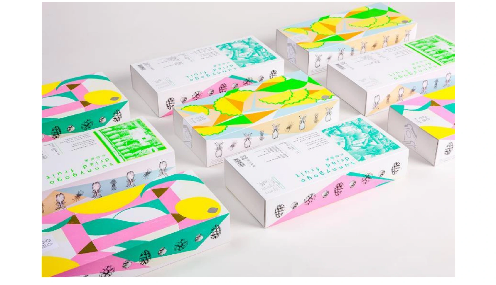

食・農
陽光菓菓

PROJECT INFORMATION
台湾の陽光菓菓。ブランドの企画・デザインとパッケージデザインを担当しています。
01 / 背景とテーマ
輪郭を与える
台湾のドライフルーツブランド「陽光菓菓 SunnyGoGo」。台湾の果物をそのまま乾かした菓子で、素材の色がとても強い。その色をそのまま見せるか、パッケージで世界観をつくるか。その配分を決めることが、ブランドづくりの出発点でした。
02 / SCHEMAの担当範囲
全体を整える
SCHEMAはブランドデザイン、パッケージ、CI制作から、販売戦略と海外展開の支援までを担当。果物ごとに異なる色を、単品で強く見せるのではなく、並んだときにひとつのシリーズとして読めるよう設計しています。誠品書店や桃園空港といった、旅の途中でふと目に入る売り場での見え方から逆算しました。
03 / 取り組みの視点
枠組みをひらく
土産としても、日常のおやつとしても成立する佇まいへ。買う人の文脈が複数あることを前提に、置かれる場所ごとに意味が変わる設計にしています。台湾国内から海外への展開までを見据え、ブランドの立ち上げと売り方を同時に組み立てた取り組みです。